lakeside12

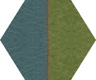

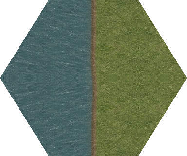
Nine new coast profiles join shared authored grass, earth and water at 2× and 4×. Curves vary inside each tile; shared crossing positions and bank profiles stay aligned. Open water uses the same material and phase.
Provisional candidates; full-map, other terrain transitions and runtime acceptance remain open. The lakeside23 profile uses the documented effective land-side mask234; lakeside12 is family-derived.
Review and verification · Numeric topology · Terrain sources · Infrastructure · Manifest · Full local build gallery (rebuild if absent)


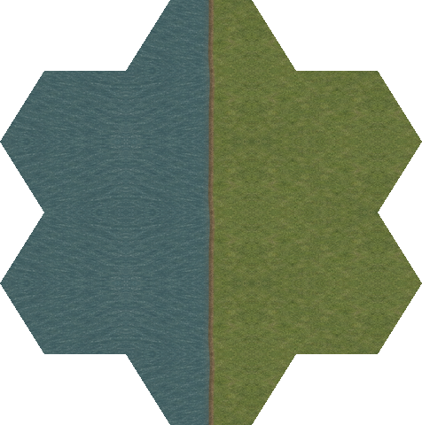

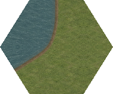

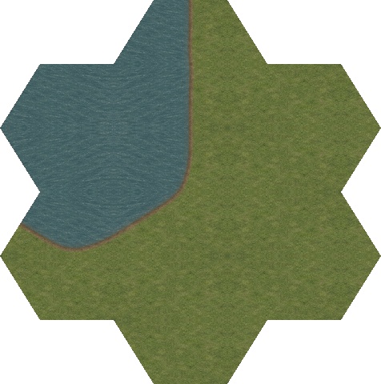
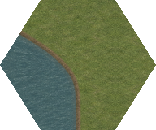
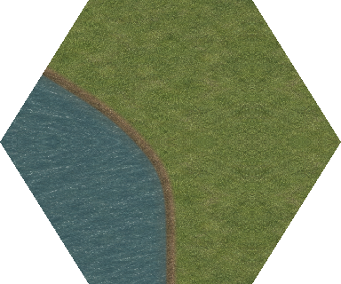
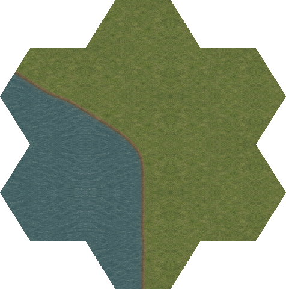

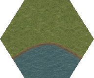
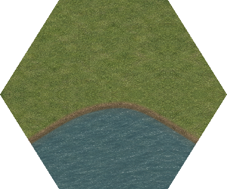
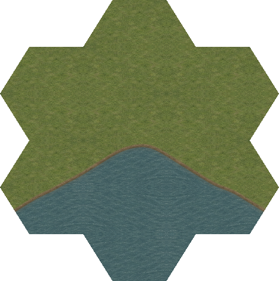

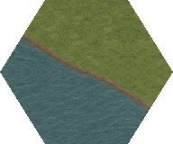
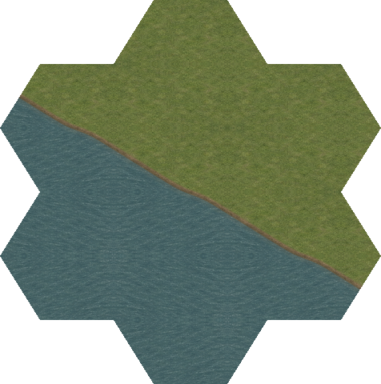

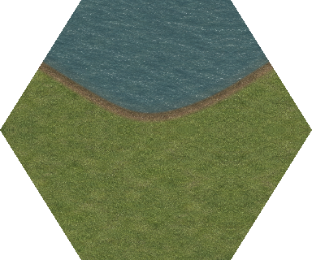

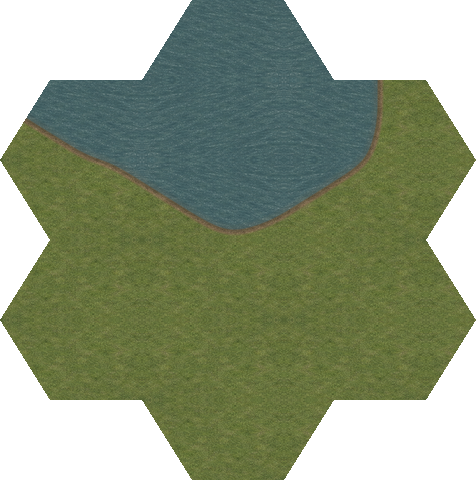
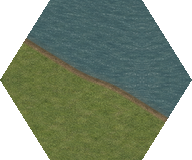
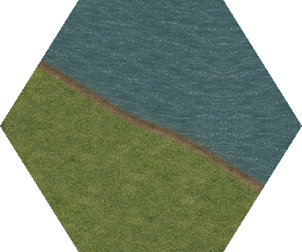
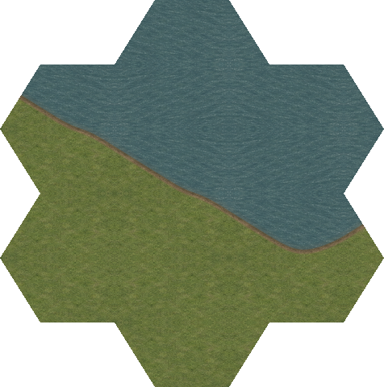

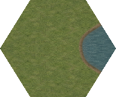
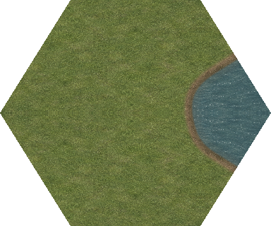

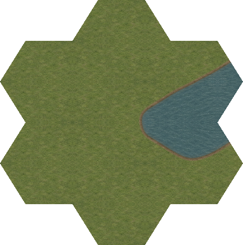
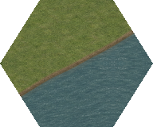
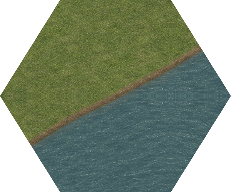
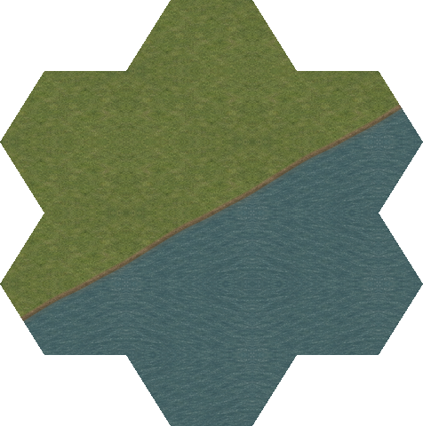

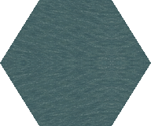
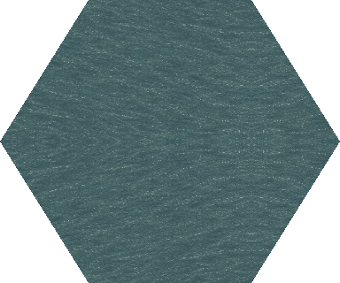

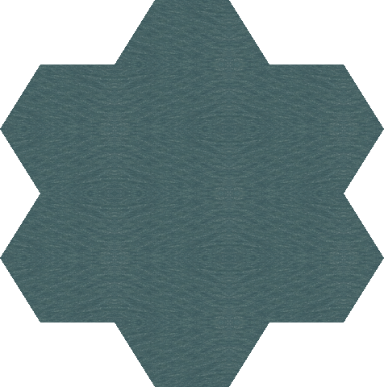